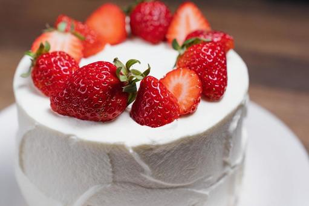
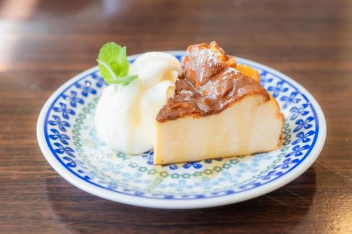
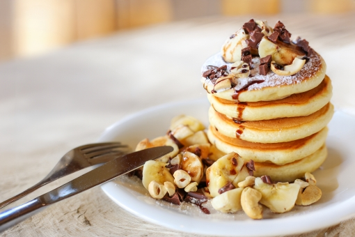
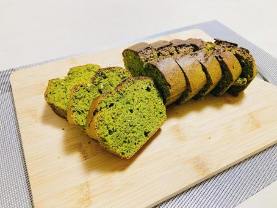

ショートケーキ
ショートケーキはスポンジにクリームやフルーツを挟んだケーキです。
イチゴを使ったものが多く一番定番のケーキです。
材料
- 薄力粉 100g
- ベーキングパウダー 小さじ1
- 卵 3個
- グラニュー糖 100g
- 無塩バター 50g
- 牛乳 50ml
- バニラエッセンス 小さじ1
- 生クリーム 200ml
- 粉砂糖 大さじ2
- イチゴ 適量
作り方
- オーブンを170℃に予熱する。
- 薄力粉とベーキングパウダーを合わせてふるっておく。
- ボウルに卵を入れ、ハンドミキサーで泡立てる。グラニュー糖を少しずつ加え、白っぽくなるまで混ぜる。
- 別のボウルで無塩バターと牛乳を湯煎で溶かし、バニラエッセンスを加える。
- 卵液にふるった粉類を加え、さっくりと混ぜる。続いて溶かしたバターと牛乳を加え、全体を混ぜ合わせる。
- 型に生地を流し込み、170℃のオーブンで25-30分焼く。焼き上がったら、型から外し冷ましておく。
- 生クリームに粉砂糖を加え、ハンドミキサーで泡立てる。
- 冷めたスポンジケーキを2枚にスライスし、1枚目の上に生クリームとスライスしたイチゴをのせる。
- もう1枚のスポンジケーキをのせ、全体に生クリームを塗る。最後にイチゴを飾り付ける。
チーズケーキ
チーズケーキはクリームチーズなどを混ぜて焼いたものです。
ビスケットを下に敷き詰めることが多く濃厚な味わいも楽しめます。
材料
- クリームチーズ 200g
- グラニュー糖 70g
- 卵 2個
- 生クリーム 100ml
- レモン汁 大さじ1
- 薄力粉 大さじ1
- ビスケット 100g
- 無塩バター（溶かしバター） 50g
作り方
- オーブンを160℃に予熱する。
- ビスケットを細かく砕き、溶かしバターを加えてよく混ぜる。
- ビスケット生地を型の底に敷き詰め、冷蔵庫で冷やしておく。
- クリームチーズを室温で柔らかくし、滑らかになるまで混ぜる。
- クリームチーズにグラニュー糖を加え、よく混ぜる。
- 卵を一つずつ加え、その都度よく混ぜる。
- 生クリーム、レモン汁、薄力粉を加え、さらに混ぜる。
- 冷やしておいたビスケット生地の上にチーズ生地を流し込む。
- 160℃のオーブンで40-45分焼く。焼き上がったらオーブンの中で冷まし、その後冷蔵庫でさらに冷やす。
ホットケーキ
ホットケーキは小麦粉やたまごなどでできるシンプルなケーキです。
ホットケーキミックスで作ることもでき手頃にたべられます。
材料
- 薄力粉 200g
- ベーキングパウダー 小さじ2
- 砂糖 大さじ2
- 卵 1個
- 牛乳 200ml
- 溶かしバター 大さじ2
- バニラエッセンス 小さじ1
- 塩 ひとつまみ
作り方
- ボウルに薄力粉、ベーキングパウダー、砂糖、塩を入れてよく混ぜる。
- 別のボウルで卵を溶きほぐし、牛乳、溶かしバター、バニラエッセンスを加えて混ぜる。
- 卵液を粉類のボウルに加えて、さっくりと混ぜる。粉っぽさがなくなるまで混ぜる。
- フライパンを中火にかけ、表面に溶かしバターを塗る。生地を適量流し入れ、表面に気泡が立ったら裏返して両面焼く。
- 全ての生地を焼き終わったら、お好みのトッピングやシロップをかけて召し上がれ。
パウンドケーキ
パウンドケーキは卵やバターを使ったシンプルなケーキです。
しっかりとした食感でさまざまなフレーバーがあります。
材料
- 無塩バター 200g
- 砂糖 200g
- 卵 4個
- 薄力粉 200g
- ベーキングパウダー 小さじ1
- バニラエッセンス 小さじ1
- 塩 ひとつまみ
作り方
- オーブンを170℃に予熱する。
- バターを室温に戻し、柔らかくする。
- バターをボウルに入れ、泡立て器でクリーム状になるまで混ぜる。
- 砂糖を加えて白くなるまで混ぜる。
- 卵を一つずつ加え、よく混ぜる。
- 薄力粉とベーキングパウダーを合わせ、ふるい入れて生地に加え、さっくりと混ぜる。
- バニラエッセンスと塩を加えてさらに混ぜる。
- 型に生地を流し入れ、170℃のオーブンで45-50分焼く。
- 竹串を刺して生地にくっきりとした穴がついたら焼き上がり。
- 焼き上がったら型から取り出して冷ましてから、お好みでカットしてお召し上がりください。